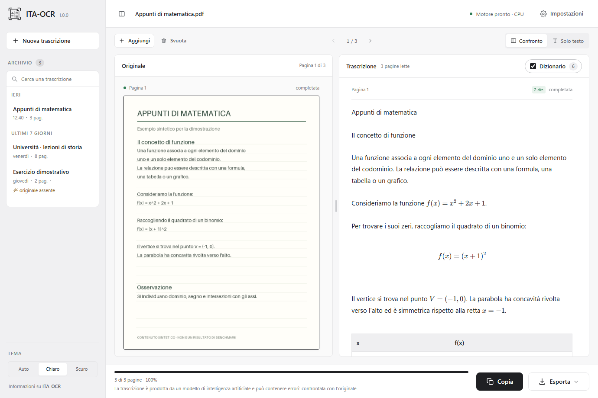
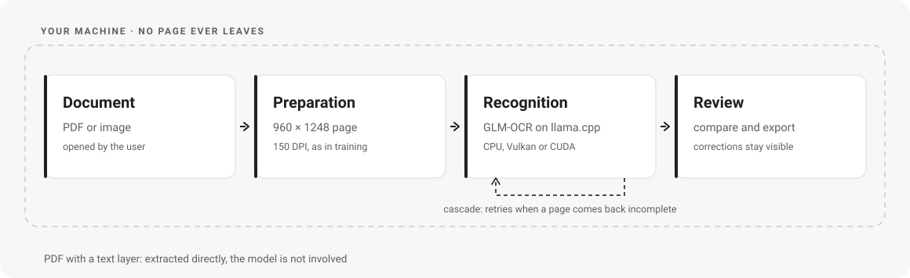
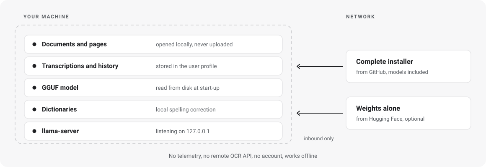

PDFs and images
PDF, PNG, JPEG, TIFF, BMP, WebP and GIF. Page navigation, and OCR can be forced on PDFs with text.
Transcribe your pages, check every word and export the result. Built on a fine-tune of GLM-OCR, with no documents uploaded to a cloud service.

Recognition runs on your machine. No remote OCR API processes the pages.
Check the text and the corrections with the document next to it, page by page.
Copy the text or export it to TXT, Markdown and DOCX and carry on working.
FROM FILE TO TEXT
One window to import, transcribe and review.
The model works behind the scenes through llama.cpp.
Open a PDF or drop an image into the app.
GLM-OCR reads the page. If the PDF already holds text, you can extract it directly.
Compare the output with the original and check the highlighted corrections.
Take the result into your editor, keeping a session in the local history.

MADE FOR PAGES
PDF, PNG, JPEG, TIFF, BMP, WebP and GIF. Page navigation, and OCR can be forced on PDFs with text.
A public Italian dictionary supports spelling correction. Substitutions stay recognisable.
Read recognised formulas and tables inside the transcription. Always check structure and symbols.
Light, dark or automatic theme. A local history to find your sessions again.
WHERE THE DATA STAYS
The engine listens on 127.0.0.1 only.
No telemetry, no account, no remote OCR API.

No external processor is involved in the OCR step, there is no transfer to third countries and no server-side copy exists. That is the substantive difference from a cloud OCR service, and it narrows the perimeter in a concrete way.
GDPR compliance remains with the data controller: legal basis, privacy notice, retention, device security and the handling of the local history, which the app stores in the user profile and which uninstalling does not remove. Details in PRIVACY.en.md.
START HERE
The application and the model are downloaded separately.
Once set up, you can transcribe offline.
Per-user x64 installer. Ships the app, the engine, the runtime, the public dictionaries and the licences.
Download the .exe installerRequires WebView2. Unsigned package: verify origin and checksum. The weights are not included.
The fine-tune and the vision projector in GGUF format. Two files, roughly 1.2 GB in total, to be placed in the app's models folder.
The dataset stays private and is not needed to use the app.
CPU, or a GPU compatible with Vulkan or CUDA. The backend depends on hardware and drivers. This release ships Windows only.
AN OPEN PROJECT
ITA-OCR combines Tauri, Rust and llama.cpp with a fine-tune of GLM-OCR. The original code is MIT; the dependencies keep their own licences.
To download the application and the weights, yes. To process documents once everything is installed, no. Recognition runs locally.
No. The engine can use Vulkan on compatible GPUs, or the CPU. CUDA is an option for NVIDIA hardware. Performance depends on the configuration.
No. Difficult handwriting, formulas and complex layouts can cause errors. The interface puts the result next to the original precisely to make checking easy.
No. Recognition happens on your machine and the engine listens on the loopback address only. The network is used to download the app and the weights, once.
No. The dataset stays private and is not part of the downloads. The application code and the model weights have separate distribution channels.